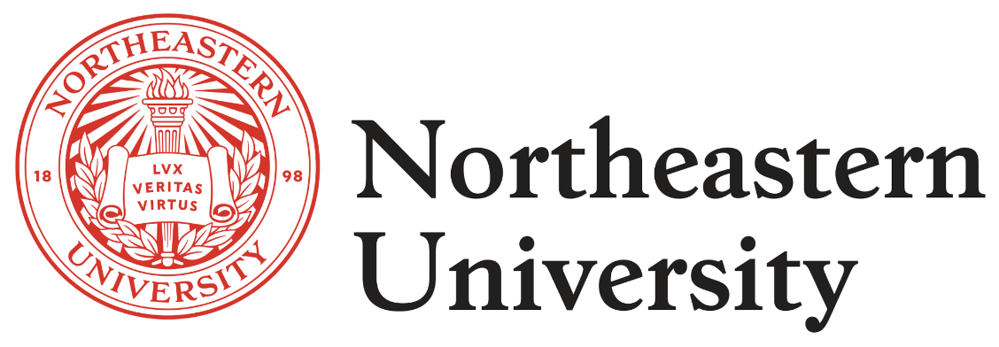

About Me
Hello! I am Yuxin Zhou 🧑🎓, currently pursuing a master's degree in Computer Science at Northeastern University Vancouver Campus. I am passionate about coding, design, problem-solving, developing innovative solutions, working with others and learning from others.
Click the logo to explore more about Northeastern University 🏫
Personal Background
In 2019, I came to Nanjing University in China to study Public Administration. I graduated in June 2023 with honors as an outstanding graduate. During these four years, I learned about public administration, public economics, public finance, and philanthropy, and I became proficient in quantitative methods in the field of social sciences. After that, I developed an interest in computer science, which led me to come to Vancouver, Canada, to study the CS Align program at Northeastern University.
Interests and Hobbies
When I'm not buried in work or studies I enjoy reading, drawing, playing guitar, photography, and traveling. Back in my undergrad days at Nanjing University, I had the fun job of leading the Photography Association, where I organized all sorts of creative outings. I have two adorable pets: a corgi named Cookie 🐶 and a tiny rabbit named Pipi 🐰. I have a soft spot for all things cute and cuddly!
Master's Courses
The courses I've taken are listed as belows:
- CS5001 Intensive Foundations of Computer Science
- CS5002 Discrete Structures
- CS5004 Object-Oriented Design
- CS5008 Data Structures, Algorithms, and Their Applications within Computer Systems
- CS5610 Web Development
- CS5800 Algorithms
- CS5520 Mobile Application Development
- CS5200 Database Management Systems